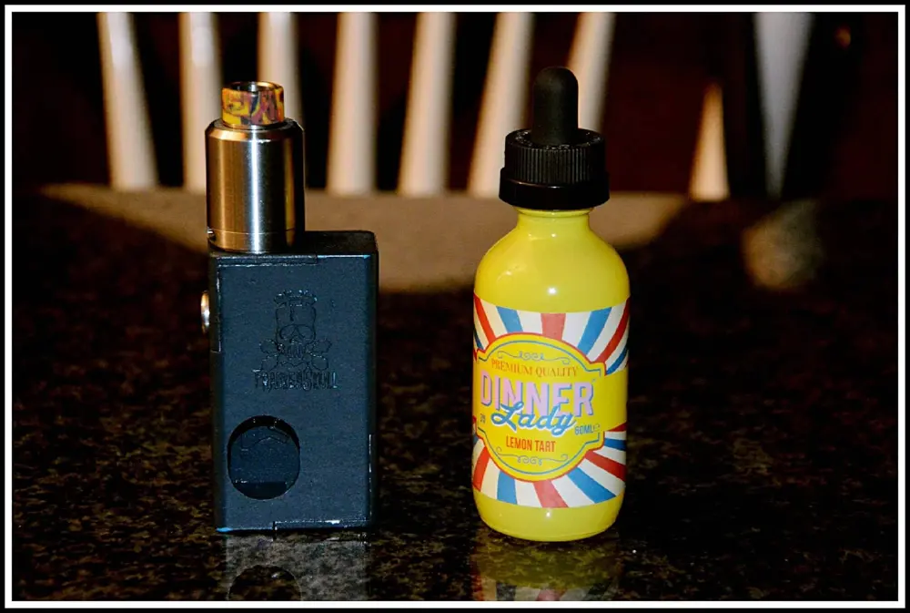
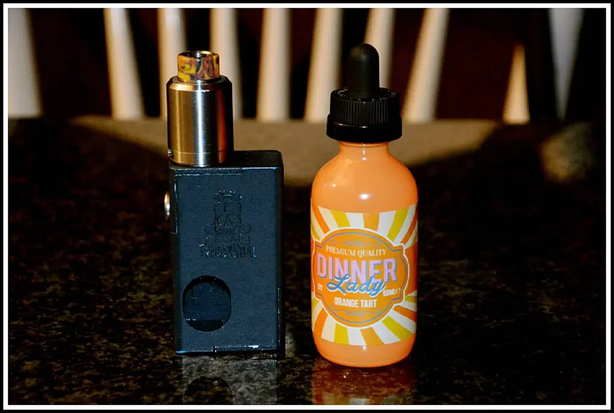
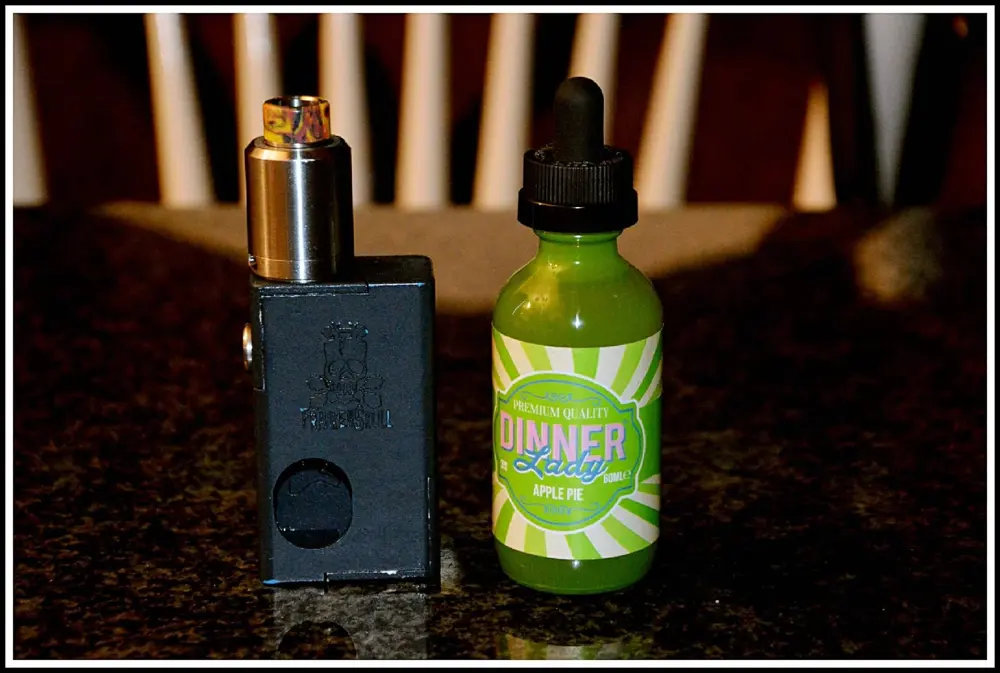
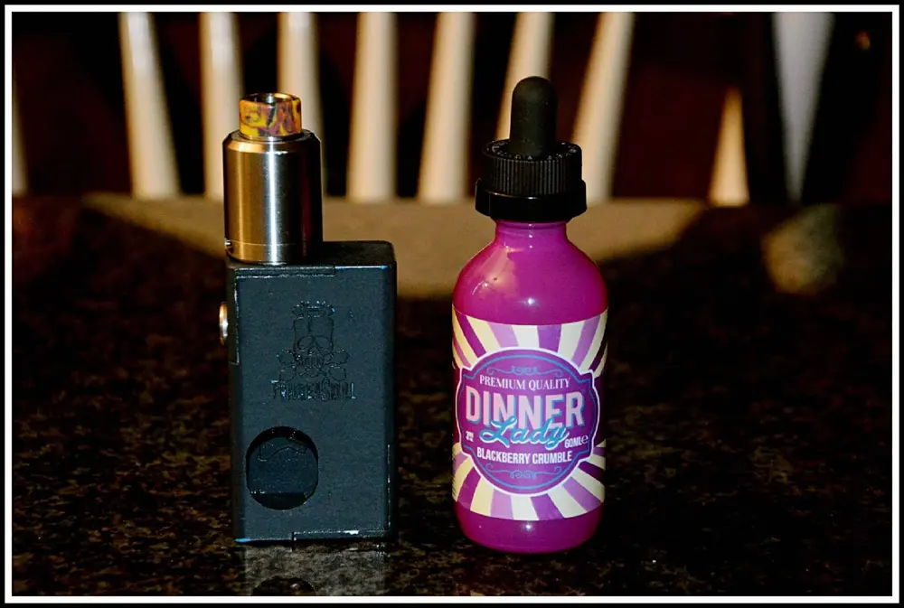
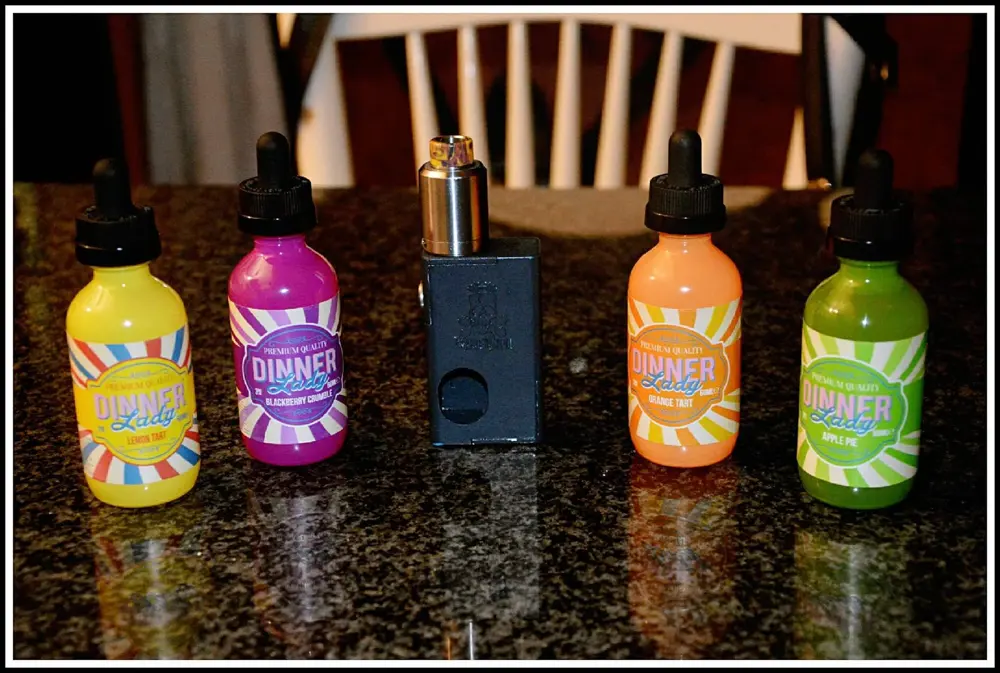

SVAPO - DINNER LADY
Svapo: Oggi parliamo di un'azienda non italiana ma bensì un prodotto che arriva direttamente dal Regno Unito.
Parliamo di un prodotto legato a quest'epoca. Lo svapo.
Sempre più giovani sperimentano liquidi dai gusti più strani oltre al semplice gusto di tabacco.
Sapete che ormai sono migliaia le persone che hanno abbandonato la sigaretta tradizionale per passare allo svapo ovvero alle sigarette elettroniche.

Io non fumo, ho fatto provare questi liquidi a chi più di me se ne intende. A detta di mio cognato, uno dei miglior liquidi sul mercato.
Il prodotto si presenta in un elegante ed allegra boccetta da 60 ml. che cambia il colore a seconda del gusto che si sceglie. In una bottiglia di vetro con sicurezza bambini.
Le gradazioni di nicotina disponibile in ogni liquido di Dinner Lady sono 0 mg/ml e 3 mg/ml.Il rapporto tra Glicerina Vegetale e Glicole Propilenico è 70% e 30 %.Questo significa che il liquido risulta abbastanza denso.
La linea che ho ricevuto grazie all'azienda Dinner Lady è 'Dessert Range'. 4 liquidi dai gusti dolci.
LEMON TART.
La crostata a limone assaporata in una nuvola di vapore. Una crostata al limone con meringa montata, il tutto cullato da una sottile pasta frolla.
Quando inalate questo liquido, un sapore di limone fresco rallegrerà all'impatto.
Quindi, il sapere di meringa zuccherata si scioglie sulle papille gustative.
Se vi piacciono i gusti dolci e soprattutto le crostate, questo è il liquido giusto per voi.

ORANGE TART.
Una cremosa base aranciata su un letto di pasta dolce, con un sottile tocco di croccante biscotto.

APPLE TART.
Al sapore di mela fresca mescolata al zucchero di canna caramellato, con un pizzico di cannella.

BLACKBERRY CRUMBLE.
Un bel sapore di calde more brianniche condite da nacciole croccanti.

Dinner Lady oltre a questa serie di liquidi cremosi, ne ha prodotte altre due linee. La 111, è una linea di liquidi con più tabacco, dal gusto forte.
La Tornado che invece è una linea di liquidi fruttati.
Insomma, consiglio di provare questi liquidi qualora vi piacciono i sapori di pasticceria dolci e cremosi.
